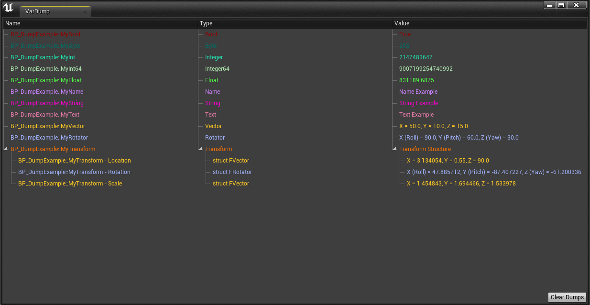
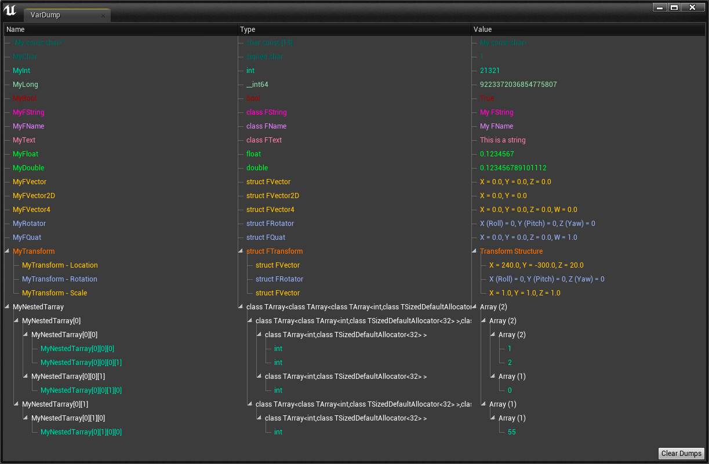

It's easy to dump any variable from the default types. Just link to the VarDump Node wildcard.
Another one will be generated for multiple dumps.
For now, only the types listed on the example, and arrays of these types are compatible
Objects, maps and sets are not supported yet.
The setup above produces the following output:

You can update any dump. Even from returns from a function, if what is returned is the same instance.
In this example, the GetActorTransform is updated since what is returned has always the same memory address.
The setup above produces the following output:

To dump a variable, just call the macro VARDUMP and put your variable as
parameter.
For now, only the types listed on the example are compatible
(And unsigned versions of integer types).
Any other class or structure will show with unknown value.
void AUsageExamples::BeginPlay() { Super::BeginPlay(); int8 MyChar = 1; int32 MyInt = 21321; int64 MyLong = LONGLONG_MAX; bool MyBool = true; FString MyFString = "My FString"; FName MyFName = "My FName"; FText MyText = FText::FromString("My FText"); float MyFloat = 0.1234567; // decimal-binary conversion digits may not be precise on string conversion double MyDouble = 0.123456789101112; // decimal-binary conversion digits may not be precise on string conversion FVector MyFVector = FVector(0, 0, 0); FVector2D MyFVector2D = FVector2D(0, 0); FVector4 MyFVector4 = FVector4(0, 0, 0, 0); FRotator MyRotator = FRotator(0, 0, 0); FQuat MyFQuat = FQuat(0, 0, 0, 1); FTransform MyTransform = GetTransform(); TArray<TArray<TArray<int32>>> MyNestedTarray{ {{1,2},{0}}, {{55}} }; VARDUMP("My const char*"); VARDUMP(MyChar); VARDUMP(MyInt); VARDUMP(MyLong); VARDUMP(MyBool); VARDUMP(MyFString); VARDUMP(MyFName); VARDUMP(MyText); VARDUMP(MyFloat); VARDUMP(MyDouble); VARDUMP(MyFVector); VARDUMP(MyFVector2D); VARDUMP(MyFVector4); VARDUMP(MyRotator); VARDUMP(MyFQuat); VARDUMP(MyTransform); VARDUMP(MyNestedTarray); }
The code above produces the following output:

Updating dumps is as easy as calling the UPDATEDUMP macro and passing the
variable you want to update.
The catch here is that for now, it updates based on the variable name and not on
it's reference, so take care with your scopes.
(This will change in the future. For more details, see Coming
Soon)
After dumping two or more times the same variable (or a variable with same name
and type), UPDATEDUMP will update just the last Dump entry.
If you want to dump something inside a object that has multiple instances and
update then, see the next example.
void AUpdateExample::BeginPlay() { Super::BeginPlay(); MyTransform = GetTransform(); VARDUMP(MyTransform); VARDUMP(MyTransform); // Dumping two times, just the last updates bool TogleEveryFiveSeconds = TogleKeeper; VARDUMP(TogleEveryFiveSeconds); } void AUpdateExample::Tick(float DeltaTime) { Super::Tick(DeltaTime); FTransform NewTransform = GetTransform(); if (!MyTransform.Equals(NewTransform)) { MyTransform = NewTransform; UPDATEDUMP(MyTransform); } SecondsCounter += DeltaTime; bool TogleEveryFiveSeconds; if (SecondsCounter > 4) { SecondsCounter -= 4; TogleKeeper = !TogleKeeper; TogleEveryFiveSeconds = TogleKeeper; UPDATEDUMP(TogleEveryFiveSeconds); //Even though updating a local variable, it updates because of the same name of a dump } }
The code above produces the following output:

The VARDUMP macro returns a pointer to a VarDumpEntry. This means that you can use it to set
a Parent for the dump.
This is useful to differentiate multiple instances of the same base class.
As seen in this example, the label of the actor is used to as a wrapper to differentiate two
actors of the same base class.
void AMultiObjectExample::BeginPlay() { Super::BeginPlay(); MyTransform = GetTransform(); FString MyActorName = GetActorLabel(); DrawDebugString(GetWorld(), MyTransform.GetLocation() + FVector(-80, 0 , 100), MyActorName, nullptr, FColor::Blue); // #include "DrawDebugHelpers.h" TransformDumpAddress = VARDUMP(MyTransform, VARDUMP(MyActorName)); } void AMultiObjectExample::Tick(float DeltaTime) { Super::Tick(DeltaTime); FTransform NewTransform = GetTransform(); if (!MyTransform.Equals(NewTransform)) { MyTransform = NewTransform; UPDATEDUMP(MyTransform); } }
The code above produces the following output:

To dump a object, you will need a pointer to the object, an alias for it, and all the properties
you want to display on the VarDump window.
For UObjects dumping themselves it's easier since you can use the "this" keyword as the pointer.
If otherwise you are dumping from another place a default pointer will suffice.
For non UObjects only the Unreal proprietary safe-pointers are allowed (TSharedPtr).
The only downside of dumping a object from outside its scope is that you will not be able to supply
the private and protected members.
As shown in this example, you can also dump nested objects, just nesting the dump calls.
There is also the possibility to dump a first object and then dumping a second one, with the first one nested.
The plugin will automatic re-parent the first to bellow the second.
void ADumpObjectExample::BeginPlay() { Super::BeginPlay(); GenerateRandomArray(RandomArray); MyInternalObject = TSharedPtr(new SomeInternalClass); // For dumping objects that are not UObjects you must use a TSharedPtr MyInternalObject->APublicFVector4Member = FVector4(0, 0, 0, 0); MyInternalObject->APublicDoubleMember = 0; if (MySubobject) { VARDUMPOBJECT(this, "Example", UpdatedTimes, RandomArray, VARDUMPOBJECT(MySubobject, MySubobject->GetActorLabel(), MySubobject->MyTransform, MySubobject->SomeString), VARDUMPOBJECT(MyInternalObject, "MyInternalObject", MyInternalObject->APublicDoubleMember, MyInternalObject->APublicFVector4Member) ); } else { VARDUMP("You need to attribute a ANestedDumpObject to this Actor->MySubobject"); } } void ADumpObjectExample::Tick(float DeltaTime) { Super::Tick(DeltaTime); SecondsCounter += DeltaTime; if (SecondsCounter > 3) { UpdatedTimes++; SecondsCounter -= 3; // GenerateRandomArray definition can be seen in the example project GenerateRandomArray(RandomArray); if (MySubobject) { UPDATEOBJECTDUMP(this); } } // GenerateRandomDouble definition can be seen in the example project GenerateRandomDouble(MyInternalObject->APublicDoubleMember); UPDATEOBJECTDUMP(MyInternalObject); // You can also update just the nested dump }
The code above produces the following output: